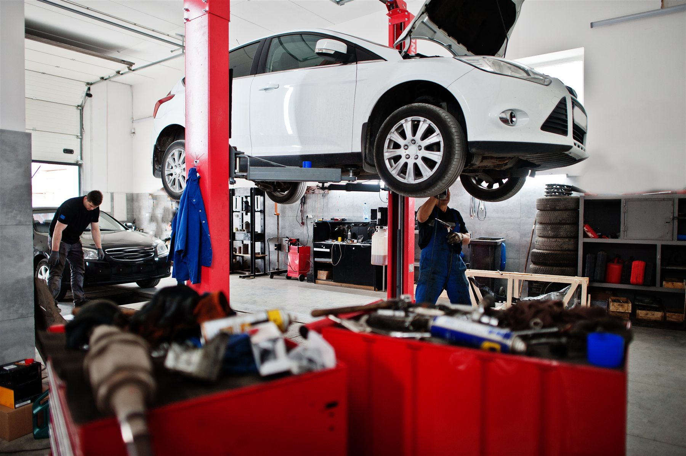
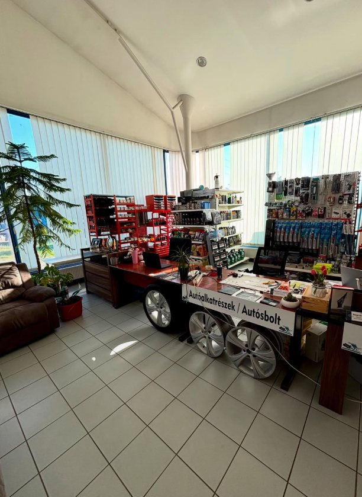
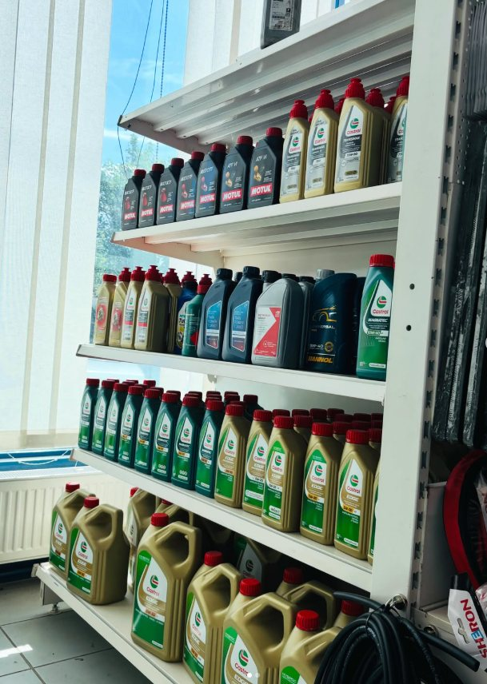
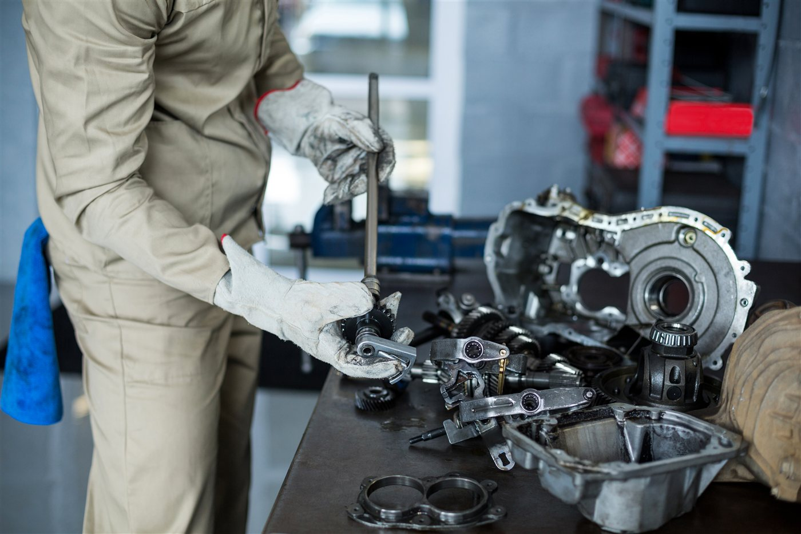
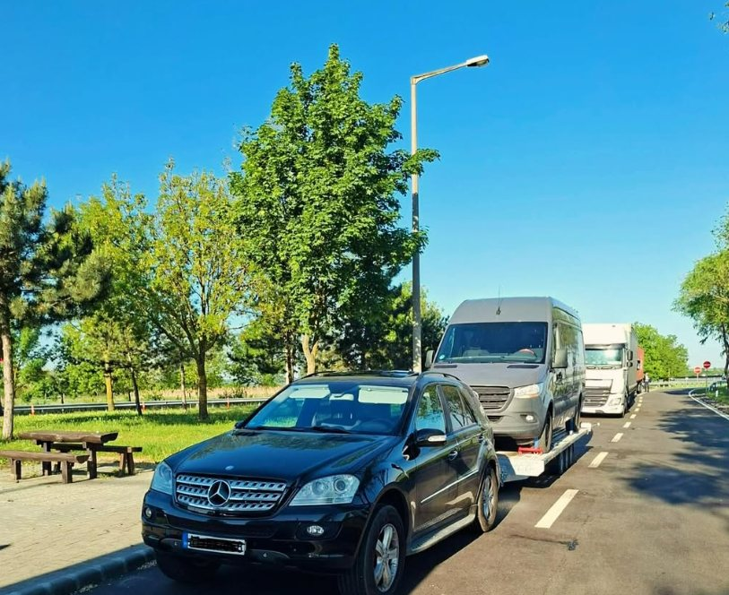

01
Teljes körű autószerviz
Autója általános szervizelésével kapcsolatban is számíthat ránk.

LEÁNYVÁR · IPAR U. 10.
Teljes körű autószerviz magánszemélyeknek és cégeknek, autósbolttal és háztól házig autószállítással.
06 30 824 5965 · H–P: 8:00–16:00AZ AUTÓJA KÖRÜL MINDEN
Magánautóval vagy céges flottával.
Várjuk Leányváron.
Autója általános szervizelésével kapcsolatban is számíthat ránk.
Automata és manuális váltók javításával is foglalkozunk.
Háztól házig autószállítási szolgáltatással is segítünk.
Autóalkatrészek és különböző autós kiegészítők helyben.
Céges gépjárműflották szervizelését is vállaljuk.
Időszakos szervizelési igénnyel is kereshet minket.


Az autósboltunk, LeányváronALKATRÉSZEK ÉS KIEGÉSZÍTŐK
A szerviz mellett autósbolt is működik, ahol autóalkatrészeket és különböző autós kiegészítőket vásárolhat.

VÁLTÓJAVÍTÁS
A teljes körű autószerviz mellett automata és manuális váltók javításával is foglalkozunk. Ha problémát tapasztal autója váltójával, keressen minket telefonon, és egyeztessünk a továbbiakról.
Érdeklődöm telefononAZ AUTÓ ÚTJÁBAN IS SEGÍTÜNK
Autószállítást is vállalunk, így szükség esetén az autó eljuttatásában is tudunk segíteni.
Hívjon minket
CÉGES ÜGYFELEINKNEK
Nemcsak magánszemélyeket, hanem céges ügyfeleket is fogadunk. Gépjárműflották szervizelését és időszakos karbantartását is vállaljuk.
Egyeztessünk flottája szervizelésérőlAutószerviz, váltójavítás, autósbolt és autószállítás egy helyen.
Magánautók mellett céges gépjárműflottákkal is foglalkozunk.
A szervizelés mellett az autó szállításában is tudunk segíteni.
4,8-as Google-értékelés 89 vélemény alapján.
VISSZAJELZÉSEK A GOOGLE-RŐL
„Professzionális munka. Kiváló kommunikáció.”
„Lelkiismeretes, alapos munkavégzés, segítőkész hozzáállás :)”
„Csak ajánlani tudom Őket! Nem egy autómat javították.”
BESZÉLJÜNK AZ AUTÓJÁRÓL
Keressen minket telefonon, és egyeztessünk!
06 30 824 5965Hétfőtől péntekig, 8:00–16:00